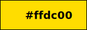
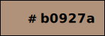
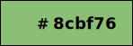
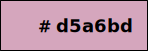
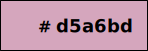
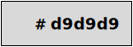
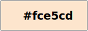

Figure 1: a graphical framework for representing CIDOC-CRM Schema.
This document introduce the Graphical Framework for representing CIDOC-CRM Schema using a set of graphical specifications for identifying the diverse classes and properties of CIDOC-CRM in a clear and understable manner. The objective of the document is to propose the use of eight different colours for the representation of eight classes (and their respective subclasses) in CRM.
The colours have been chosen in order to provide a clear and straightdorward characterisation of the entity diversity in a CIDOC-CRM graphical representation, helping the user navigate complex models and promptly understand what type of classes are being depicted. The figure below provide an overview of the graphical framework used
Figure 1: a graphical framework for representing CIDOC-CRM Schema.
In this section we introduce the basic identification characteristics of the documented classes. For each class a rectangle with solid black border is used to declare classes. The distinction between the type of classes is given by the colour of the rectangle. The text inside each rectangle report the hex value of its colour. The colour value is also reported in RGB.
| Type of class | Graphic Representation | Hex | RGB value |
|---|---|---|---|
| E28 Conceptual Object |  | FFDC00 | rgb(255,220,0) |
| E18 Physical Thing |  | B0927A | rgb(176,146,122) |
| E53 Place |  | 8CBF76 | rgb(140,191,118) |
| E2 Temporal Entity | 5DAEEC | rgb(93,174,236) | |
| E52 Time-Span |  |
76A5AF | rgb(118,165,175) |
| E39 Actor |  | D5A6BD | rgb(213,166,189) |
| E55 Type |  | FA9158 | rgb(250,145,88) |
| E54 Dimension |  |
F45862 | rgb(244,88,98) |
| E1 CRM Entity |  | D9D9D9 | rgb(217,217,217) |
| Literals |  | FCE5CD | rgb(252,229,205) |
The Graphical Framework for CIDOC-CRM Schema has been developed as an agnostic model, therefore, to be used you only need to follow the above specifications. The author, however, has developed its own stencil set to be used with its software of choice: Omnigraffle.
To use the omnigraffle stencil set:
If you have developed a stencil set following this requirements for your own application of choice, let us know! We will happily make available to the community on this page.
The initiative took place under the Swiss Art Research Infrastracture project and it has been based on the Graphical Framework for OWL Ontologies by Silvio Peroni.